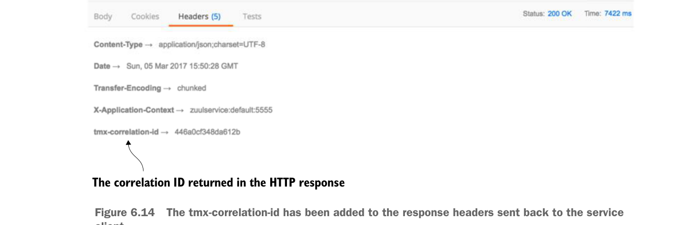

The tmx-correlation-id has been added to the response headers sent back to the service client.
Once the ResponseFilter has been implemented, you can fire up your Zuul service and call the EagleEye licensing service through it. Once the service has completed, you’ll see a tmx-correlation-id on the HTTP response header from the call. Figure 6.14 shows the tmx-correlation-id being sent back from the call.
Up until this point, all our filter examples have dealt with manipulating the service client calls before and after it has been routed to its target destination. For our last filter example, let’s look at how you can dynamically change the target route you want to send the user to.
6.7 Building a dynamic route filter
The last Zuul filter we’ll look at is the Zuul route filter. Without a custom route filter in place, Zuul will do all its routing based on the mapping definitions you saw earlier in the chapter. However, by building a Zuul route filter, you can add intelligence to how a service client’s invocation will be routed.
In this section, you’ll learn about Zuul’s route filter by building a route filter that will allow you to do A/B testing of a new version of a service. A/B testing is where you roll out a new feature and then have a percentage of the total user population use that feature. The rest of the user population still uses the old service. In this example, you’re going to simulate rolling out a new version of the organization service where you want 50% of the users go to the old service and 50% of the users to go to the new service.
To do this you’re going to build a Zuul route filter, called SpecialRoutesFilter, that will take the Eureka service ID of the service being called by Zuul and